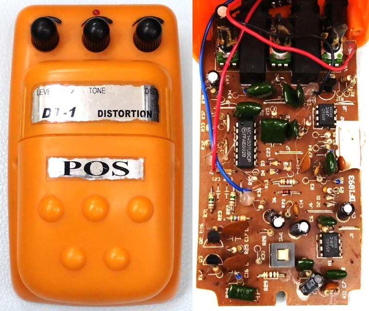
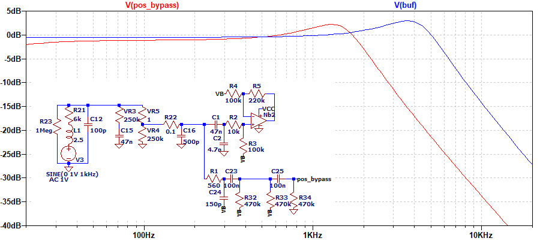
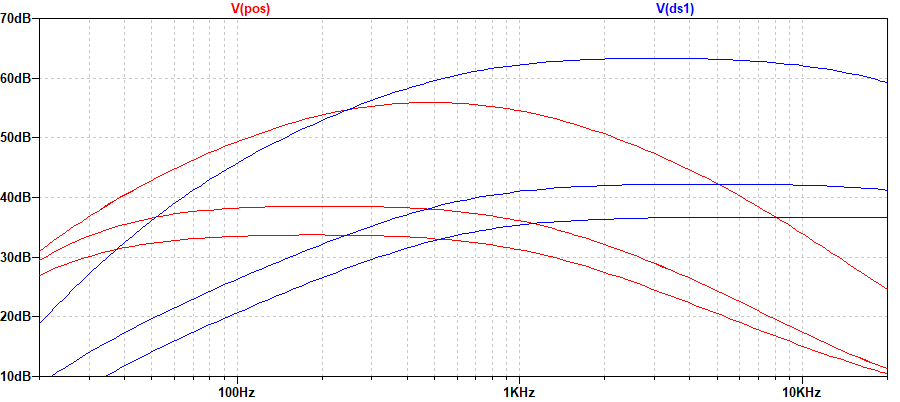
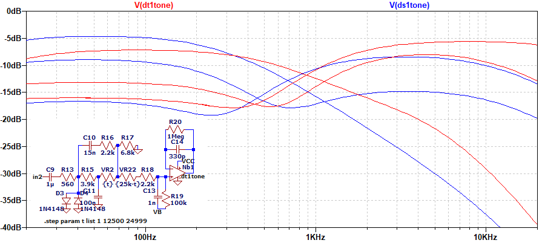
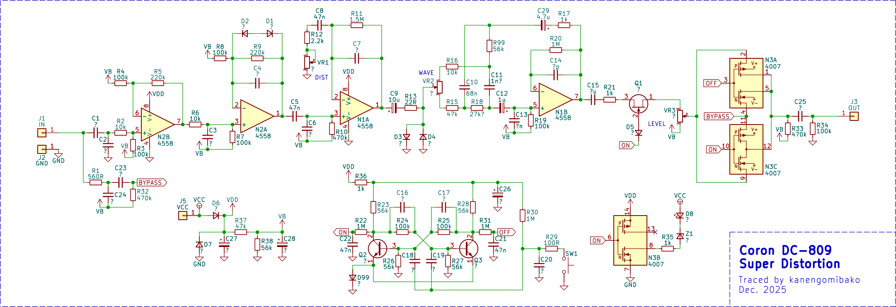
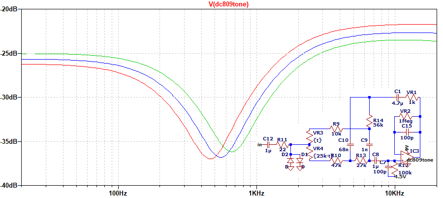
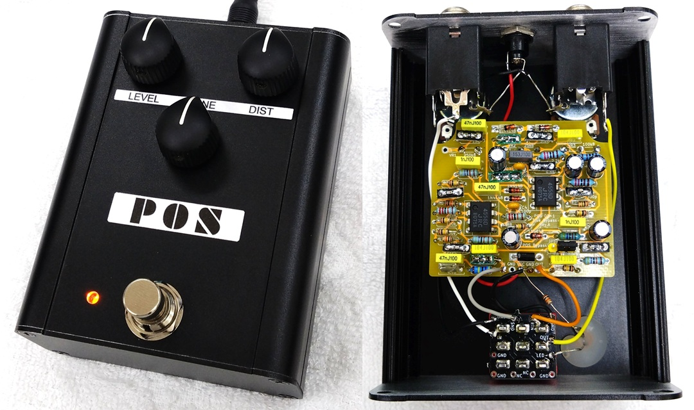

POS DT-1 DISTORTION 解析
2026年01月09日 カテゴリー：修理・改造・解析

POS DT-1（以下POS）は低価格なエフェクターの中で特に知名度が高く、同人誌（→ POSCOLLECTORBOOK、以下POS本）も発刊されています。 数年前、その同人誌の企画者の方からPOSを譲り受けました。今回、その方の許可を得て解析記事を掲載することにしました。 KiCadデータ（基板画像入り）とLTspiceの回路図データはGitHubにあります。
【回路図】

POS本でのPOSの分類は最初期型／前期型／後期型／最終期型とされています。 記事先頭にある写真は最初期型、回路をトレースしたのは前期型です。最終期型でBOSS DS-1のコピーとなるまで、基本的には同じ回路のようです。 HCF4007でスイッチを構成し、バッファー無しのバイパスとなっているのが特徴的です。
設計意図が不明な部分
D1、D2
ダイオードが向かい合って接続されており、クリッピングは行われません。 ツェナーダイオードであれば、このような接続をすることがあります（→ SansAmp Bass Driver DI V1後期型）。 強いて言えば、ダイオードの端子間容量の数pFが付加される意味合いはあります。
R6、C3
10kΩと330pFで、カットオフ周波数が48kHzに設定されています。 可聴域にほぼ影響はなく、発振防止という目的かもしれません。
C6
オペアンプの出力の負荷として抵抗なしでコンデンサを入れると、発振の原因となります。
R20、C14
オペアンプの出力と反転入力を直結したボルテージフォロワーと同じとなるため、R20とC14の意味はほぼありません。
バイパス

ギター直結の場合で、一般的なオペアンプのバッファとの比較です。POSでは入力部のC2の影響が大きく、大幅に高音域が低下しています。また、C23やC25の容量値が大きくないため、低音域も少し低下が見られます。
DIST 0% → 50% → 100%

クリッピングの前までの回路で、DS-1との比較です。POSは低音域側の方が大きく増幅されるため、ファズに近い音色に感じられます。
TONE 0% → 50% → 100%

DS-1との比較です。Big Muffでも用いられている、ハイパスフィルターとローパスフィルターを組み合わせたトーン回路です。POSの場合はポットのつなぎ方が独特になっていて、高音域（ハイパスフィルター側の影響）が出やすくなっています。
{kind=link}
{kind=link}
{kind=link}
【元になったエフェクター】
通常、安価なエフェクターは他の回路のコピーとなっていることが多く、POSの回路も何か別のエフェクターが元になっていると思われます。Xでのペダ吉氏の研究発表「POS DT-1の回路はどこから来たのか」によると、Coron DC-809 Super Distortionが挙げられていました。そこで、検索で見つかったDC-809の基板画像から回路図を起こしてみました。
コンデンサの値は不明ですが抵抗値は一致するものが多く、バイパス方式も同じです。確かにPOSの元になっていると考えてよいでしょう。ただ、トーン回路は全く違っており、コントロール名がWAVEとなっています。シミュレーションすると、ミッドカット周波数を変化させているようです。
DC-809から別のメーカーにコピーされる過程の中のどこかで、WAVE → TONEへと回路が変更されたと考えられます。
【クローン製作 】
POSのクローンを製作しました。バイパス音を改善するには前段にバッファーを置くことが有効ですが、歪みエフェクトの方も元の音から離れてしまうため、トゥルーバイパスとしました。基板右下のジャンパーピンを付け替えると、エフェクト音がPOSのバイパス音になります。